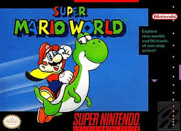
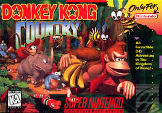
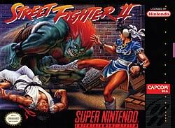
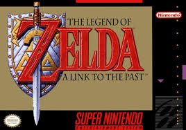
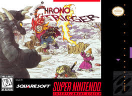
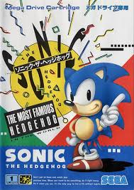
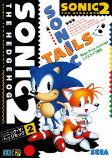
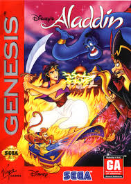
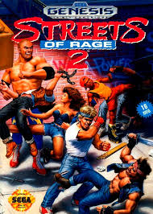
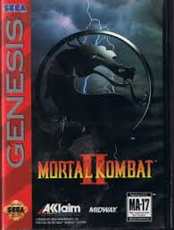

Selecione as Gerações
Era dos 8-bits


Era dos 16-bits


Era dos 32/64-bits


Super Nintendo Entertainment System

Nome: Super Mario World
Data de Lançamento: 21 de novembro de 1990
Empresa: Nintendo
Descrição:
Enquanto tiravam férias na exuberante Terra dos Dinossauros, a Princesa Peach é novamente raptada por Bowser. Com a ajuda de um dinossaurinho verde chamado Yoshi, Mario e Luigi exploram um mapa gigantesco repleto de segredos.

Nome: Donkey Kong Country
Data de Lançamento: 21 de novembro de 1994
Empresa: Rare
Descrição:
O jacaré Rei K. Rool e sua gangue de Kremlings invadem a ilha dos macacos e roubam todo o estoque de bananas do Donkey Kong. Juntamente com seu ágil sobrinho Diddy Kong, eles atravessam a ilha para espancar os répteis e recuperar o tesouro.

Nome: Street Fighter II: The World Warrior
Data de Lançamento: 10 de junho de 1992
Empresa: Capcom
Descrição:
Lutadores de artes marciais de diversos cantos do mundo entram em um torneio internacional de combate para provar quem é o guerreiro definitivo e desmantelar a organização criminosa Shadaloo, liderada pelo ditador M. Bison.

Nome: The Legend of Zelda: A Link to the Past
Data de Lançamento: 21 de novembro de 1991
Empresa: Nintendo
Descrição:
O feiticeiro Agahnim elimina o rei de Hyrule e começa a aprisionar as descendentes dos Sete Sábios para romper o selo que prende Ganon no Mundo das Trevas. Link precisa viajar entre as dimensões da Luz e das Trevas para impedir a catástrofe.

Nome: Chrono Trigger
Data de Lançamento: 11 de março de 1995
Empresa: Square
Descrição:
Durante uma feira milenar, um acidente com um teletransporte joga a jovem Marle no passado. Seu amigo Crono viaja no tempo para resgatá-la, mas o grupo acaba descobrindo que uma criatura alienígena parasita chamada Lavos vai destruir o planeta no futuro (ano 1999), iniciando uma corrida temporal para reescrever a história.
Mega Drive

Nome: Sonic the Hedgehog
Data de Lançamento: 23 de junho de 1991
Empresa: Sega
Descrição:
O jogo que mudou o patamar da Sega. Traz a primeira grande batalha de velocidade do ouriço Sonic contra o Dr. Robotnik para salvar os animais nativos e as Esmeraldas do Caos nas belas colinas da Green Hill Zone.

Nome: Sonic the Hedgehog 2
Data de Lançamento: 24 de novembro de 1992
Empresa: Sega
Descrição:
Robotnik está construindo uma estação espacial armada chamada "Ovo da Morte". Sonic retorna à ação com seu novo melhor amigo de duas caudas, Tails, buscando coletar as esmeraldas e impedir o lançamento da arma espacial.

Nome: Disney's Aladdin
Data de Lançamento: 11 de novembro de 1993
Empresa: Virgin Games
Descrição:
Baseado na animação clássica, o jovem de rua Aladdin encontra uma lâmpada mágica com um gênio brincalhão. Ele precisa usar seus desejos e habilidades para derrotar o vizir maligno Jafar, conquistar o amor da Princesa Jasmine e salvar a cidade de Agrabah.

Nome: Streets of Rage 2
Data de Lançamento: 20 de dezembro de 1992
Empresa: Sega
Descrição:
Um ano após derrotarem o sindicato do crime, o terrível Mr. X retorna das sombras e sequestra Adam, um dos heróis originais. Seus amigos Axel e Blaze se unem a Skate e Max para descer a lenha nas gangues de rua e resgatar o companheiro.

Nome: Mortal Kombat II
Data de Lançamento: 1994
Empresa: Midway
Descrição:
Após a derrota de Shang Tsung, o imperador da Exoterra, Shao Kahn, cria um novo e perigoso torneio de artes marciais em sua própria dimensão. Os guerreiros da Terra são atraídos para a armadilha, onde lutas sangrentas decidirão o destino dos reinos.